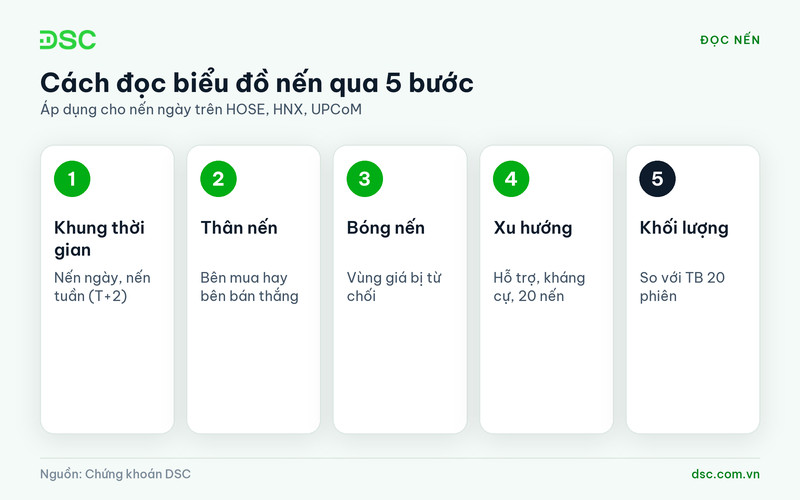
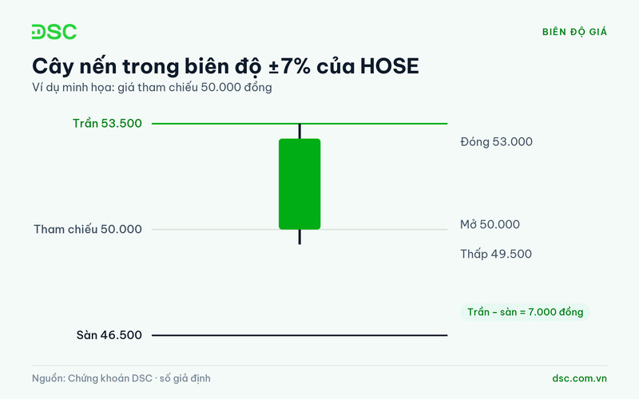

Cách đọc biểu đồ nến chứng khoán gồm 5 bước: chọn khung thời gian, đọc thân nến, đọc bóng nến, xem xu hướng, xác nhận bằng khối lượng. Mỗi cây nến cho biết 4 mức giá của một phiên: mở cửa, cao nhất, thấp nhất, đóng cửa. Trên HOSE, biên độ ±7% giới hạn cây nến ngày dài tối đa 14% giá tham chiếu.
Trong bài viết này, Chứng khoán DSC tóm tắt những điểm chính bạn cần nắm.
Đọc nến là kỹ năng nền của phân tích kỹ thuật và là một bước trong cách chơi chứng khoán cho người mới. Nếu bạn từng mở bảng giá và chỉ thấy một dãy nến xanh đỏ, đọc tiếp để biết mỗi cây nến đang nói gì trước lệnh mua đầu tiên.
Biểu đồ nến (còn gọi là nến Nhật) thể hiện biến động giá của một mã chứng khoán, mỗi cây nến ứng với một khoảng thời gian. Với nến ngày, mỗi cây nến đại diện cho giá mở cửa, giá cao nhất, giá thấp nhất và giá đóng cửa của cổ phiếu trong phiên đó.
Nến dài nghĩa là phiên biến động mạnh. Cây nến có thân ngắn và bóng nến dài cho biết giá mở cửa và đóng cửa gần nhau, dù giá trong phiên biến động mạnh.

Biểu đồ nến là một trong ba dạng biểu đồ kỹ thuật phổ biến. Điểm khác nhau nằm ở số mức giá mỗi dạng hiển thị trong một phiên.
| Dạng biểu đồ | Số mức giá mỗi phiên | Người mới đọc được gì |
|---|---|---|
| Biểu đồ đường | 1 (giá đóng cửa) | Xu hướng chung, không thấy biến động trong phiên |
| Biểu đồ thanh | 4 (mở, cao, thấp, đóng) | Đủ thông tin nhưng khó nhìn phiên tăng hay giảm |
| Biểu đồ nến | 4 (mở, cao, thấp, đóng) | Màu thân nến cho biết ngay phiên tăng hay giảm |

Cấu tạo một cây nến gồm 3 phần, dựng từ 4 mức giá của phiên.
Màu sắc của nến cho biết giá đóng cửa cao hơn hay thấp hơn giá mở cửa.
Một số phần mềm cho phép đổi màu nến, nên xem phần chú giải trước khi đọc.
Ví dụ minh họa với số giả định: cổ phiếu mở cửa 50.000 đồng, lên cao nhất 52.000, xuống thấp nhất 49.000 và đóng cửa 51.000 đồng. Đây là nến tăng có thân 1.000 đồng. Bóng trên và bóng dưới cùng dài 1.000 đồng.
Đọc biểu đồ nến theo 5 bước cố định, từ khung thời gian đến khối lượng giao dịch. Thứ tự này giúp người mới không kết luận từ một cây nến đơn lẻ.

Mỗi cây nến ứng với một khung thời gian: 1 phút, 1 giờ, 1 ngày hoặc 1 tuần. Khung càng ngắn, tín hiệu càng nhiễu và càng nhanh mất giá trị.
Thị trường Việt Nam thanh toán T+2: cổ phiếu mua hôm nay về tài khoản lúc 13h ngày làm việc thứ hai sau đó mới bán được. Vì vậy lướt theo nến phút không áp dụng được cho lệnh mua mới. Nến ngày và nến tuần phù hợp hơn.
| Khung thời gian | Dùng để | Độ nhiễu |
|---|---|---|
| Nến tuần | Xem xu hướng vài tháng | Thấp |
| Nến ngày | Chọn điểm mua, bán cho người mới | Trung bình |
| Nến 15 phút, 1 giờ | Theo dõi trong phiên, nhà đầu tư chủ động | Cao |
| Nến 1 phút | Không phù hợp người mới: quá nhiễu, mua hôm nay chưa bán được (T+2) | Rất cao |
Thân nến cho biết bên nào thắng trong phiên và thắng nhiều hay ít. Thân dài màu xanh nghĩa là bên mua đẩy giá đóng cửa xa giá mở cửa; thân dài màu đỏ là bên bán áp đảo.
Thân rất ngắn cho biết giá đóng cửa gần giá mở cửa. Hai bên giằng co, chưa bên nào thắng. Khi mở cửa gần bằng đóng cửa, đó là nến doji.
Bóng nến cho biết vùng giá bị thị trường từ chối. Bóng trên dài nghĩa là giá từng lên cao nhưng bị bên bán đẩy xuống trước giờ đóng cửa.
Bóng dưới dài cho thấy điều ngược lại: giá từng giảm sâu rồi được bên mua kéo lên. Bóng dài gấp 2 lần thân nến trở lên là tín hiệu đáng ghi lại.
Một cây nến có nghĩa khác nhau tùy vị trí của nó. Nến bóng dưới dài sau chuỗi giảm, ngay tại vùng hỗ trợ và kháng cự, đáng chú ý hơn so với khi nó nằm giữa xu hướng tăng.
Cách xác định xu hướng đơn giản nhất là xem 20 cây nến ngày gần nhất. Đỉnh sau cao hơn đỉnh trước và đáy sau cao hơn đáy trước là xu hướng tăng; ngược lại là xu hướng giảm.
Khối lượng giao dịch cho biết có bao nhiêu cổ phiếu đổi tay trong phiên của cây nến đó. Nhiều nhà đầu tư dùng mốc tham khảo 1,5 lần khối lượng trung bình 20 phiên để coi một phiên là khối lượng cao. Đây là quy ước, không phải quy tắc cố định.
Nến tăng thân dài với khối lượng thấp hơn trung bình cho thấy ít người tham gia. Tín hiệu đó yếu. Người mới nên chờ thêm 1 phiên xác nhận trước khi đặt lệnh.
Đọc biểu đồ nến cho biết bên mua hay bên bán đang kiểm soát giá. Nhờ đó người mới tránh mua đuổi, tức mua khi giá đã tăng mạnh, ở vùng giá bị từ chối. Bảng dưới tóm tắt 4 hình dạng nến thường gặp và việc nên làm.
| Hình dạng nến | Bên nào đang mạnh | Người mới nên làm gì |
|---|---|---|
| Thân dài màu xanh, bóng ngắn | Bên mua áp đảo cả phiên | Kiểm tra khối lượng, không mua đuổi khi giá đã sát trần |
| Bóng trên dài ở vùng giá cao | Giá bị bên bán đẩy xuống | Thận trọng, chờ phiên sau xác nhận |
| Bóng dưới dài sau chuỗi giảm | Bên mua bắt đầu đỡ giá | Theo dõi, chưa phải tín hiệu mua ngay |
| Thân ngắn, hai bóng dài | Hai bên giằng co | Đứng ngoài, chờ phiên có hướng rõ |
Khi 2–3 cây nến liên tiếp cho tín hiệu đổi hướng, chúng tạo thành mô hình nến đảo chiều. Một cây nến đơn lẻ chỉ là gợi ý.
Biên độ giá giới hạn mức giá cao nhất và thấp nhất mỗi phiên, nên cũng giới hạn độ dài tối đa của cây nến ngày. Biên độ áp dụng tháng 11/2026 là ±7% trên HOSE, ±10% trên HNX và ±15% trên UPCoM, trừ phiên chào sàn đầu tiên.
Ví dụ minh họa với giá tham chiếu giả định 50.000 đồng trên HOSE: giá trần là 53.500 đồng, giá sàn là 46.500 đồng. Thân nến cộng bóng nến trong phiên đó dài tối đa 7.000 đồng.
| Sàn | Biên độ | Giá trần (tham chiếu 50.000) | Giá sàn (tham chiếu 50.000) |
|---|---|---|---|
| HOSE | ±7% | 53.500 | 46.500 |
| HNX | ±10% | 55.000 | 45.000 |
| UPCoM | ±15% | 57.500 | 42.500 |

Giả sử một mã đóng cửa tăng 7% so với giá tham chiếu. Trên HOSE đó là nến kéo trần, tức đóng cửa ở giá trần. Trên HNX, mức tăng đó mới đi được 7/10 biên độ; trên UPCoM chưa tới nửa biên độ 15%.
Nến thân dài chỉ mạnh khi so với biên độ của chính sàn đó. Khi so nến của mã HOSE với mã UPCoM, bạn đối chiếu độ dài cây nến với biên độ giao dịch của từng sàn.
Ba lưu ý dưới đây giúp người mới tránh lỗi thường gặp nhất là mua theo một cây nến đẹp.
Ngoài nến tăng và nến giảm, người mới thường gặp 5 mẫu nến dưới đây.
Hammer và hanging man giống hệt nhau. Vị trí trong xu hướng ở Bước 4 là cách duy nhất để phân biệt hai mẫu này. Ngoài 5 mẫu trên, bạn có thể tra cứu thêm 30+ mô hình nến phổ biến trên thị trường chứng khoán.
Biểu đồ nến là biểu đồ giá, mỗi cây nến gồm 4 mức giá của một phiên. Nến Nhật là tên gọi khác của biểu đồ này.
Bóng nến là đoạn mảnh nằm trên và dưới thân nến, nối thân nến với giá cao nhất và thấp nhất trong phiên.
Nến xanh chỉ có nghĩa giá đóng cửa cao hơn giá mở cửa của chính phiên đó. Nếu phiên mở cửa giảm 3% rồi hồi lên đóng cửa giảm 1%, nến vẫn xanh dù cổ phiếu giảm so với phiên trước.
Nến ngày để chọn điểm mua bán, nến tuần để xem xu hướng chung. Nến phút quá nhiễu, và cổ phiếu vừa mua chỉ bán được sau T+2.
Đọc nến là đọc cuộc giằng co giữa bên mua và bên bán trong một phiên. Tín hiệu chỉ có giá trị khi đặt cạnh xu hướng, khối lượng và biên độ của sàn, và nến không dự báo chắc chắn giá phiên sau. Ba việc nên làm sau bài này:
Bạn không cần thuộc hết mẫu nến mới bắt đầu. Chuyên gia Môi giới 1:1 của DSC hướng dẫn sàn, lô giao dịch và cách đặt lệnh khi bạn cần hỏi. Mở tài khoản chứng khoán DSC với eKYC 3 phút trên App DSC Trading.
Sẵn sàng đặt lệnh đầu tiên sau khi đọc nến
eKYC 3 phút • Môi giới 1:1 • Phí giao dịch từ 0,1%
Mở tài khoản — 3 phút